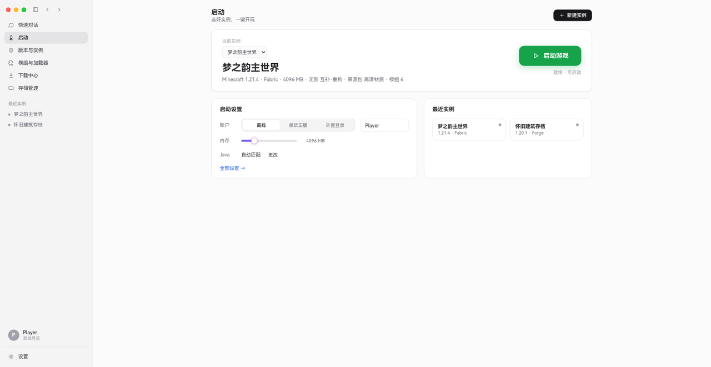
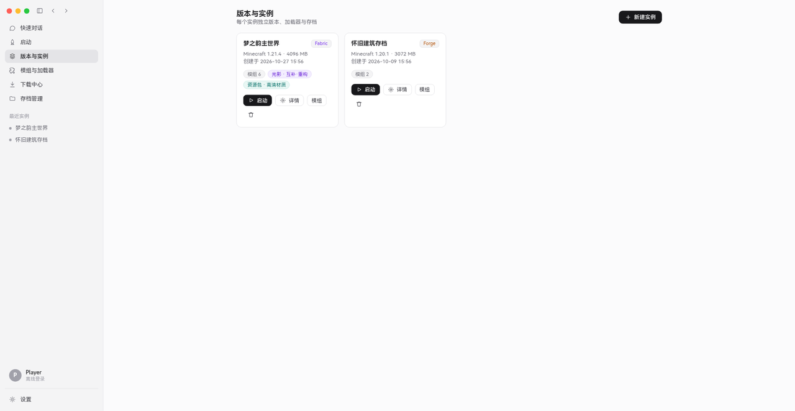
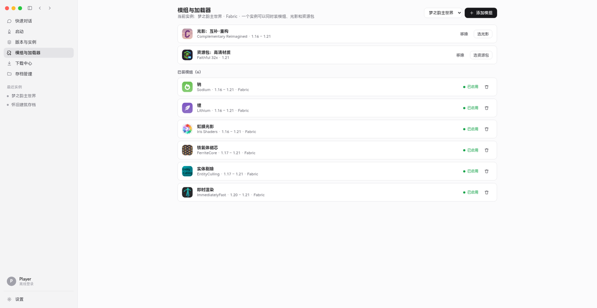

界面预览
围绕开玩、管理与定制设计，功能均可在客户端内直接使用。

一键启动，选好实例直接开玩
告别繁琐的命令行与配置，在可视化界面里完成启动前的全部准备。
当前实例概览
版本、加载器、内存、光影与模组数量一目了然，就绪状态清晰可见。
启动设置
账户类型、游戏名、内存分配与 Java 匹配集中管理，可随时调整。
最近实例
常用实例快捷进入，多环境切换无需重复查找。

版本与实例，彼此隔离
每个实例拥有独立运行目录，存档、模组与配置互不干扰。
官方版本与快照
支持正式版与历史快照，按版本号与发布日期选择。
多加载器
可搭配 Fabric、Forge、NeoForge、Quilt 等加载器安装。
独立运行目录
开启版本隔离后，不同实例的模组、存档与配置各自独立。

模组、光影与资源包集中管理
按实例安装与管理内容，启用、移除随时可控。
按实例安装模组
模组目录按用途分类，支持加载器与版本筛选，安装到指定实例。
光影与资源包
光影、材质与 HUD 资源包分别管理，与模组配置互不冲突。
启用状态可控
已装内容显示启用状态，可单独移除，不影响其他实例。
核心特性
围绕开玩、联机与定制体验设计，功能均可在客户端内直接使用。
多版本与加载器
支持官方正式版、快照与历史版本，可搭配 Fabric、Forge、NeoForge、Quilt 等加载器安装。
模组与资源管理
集中管理模组、光影与资源包，按实例隔离配置，互不干扰。
实例隔离
每个实例拥有独立运行目录，存档、模组与配置彼此独立，便于多环境切换。
存档管理与备份
查看与管理本地存档，支持备份存档，降低误操作带来的进度丢失风险。
账户接入
支持离线登录与外置皮肤站（Yggdrasil）接入，账户令牌仅保留在本机宿主侧。
云端版本自检
启动时上报本地版本并比对云端台账，发现新版本时提示更新，可查看更新日志与下载入口。
下载客户端
安装包按「产品名_打包日期_架构_版本」规范命名，发布前在云端台账登记最新版本号。
喵科启动器 Windows 版
当前最新版本以云端台账为准。
系统要求：Windows 10 / 11（64 位）；运行需具备 .NET 8 运行环境，免安装外壳已内置所需依赖。
更新日志
最新版本说明由云端台账维护，启动器自检时同步展示。
常见问题
关于喵科启动器的常见疑问，可在这里找到答案。
当前桌面外壳面向 Windows 10 / 11（64 位）提供；版本、加载器与模组目录逻辑同时兼容 macOS 与 Linux 环境，后续版本将逐步补齐对应安装包。
免安装外壳已内置所需 .NET 8 运行依赖；游戏运行所需 Java 可在下载中心按版本选择对应运行时，启动器支持自动匹配。
不会。开启版本隔离后，每个实例拥有独立运行目录，模组、光影、资源包与存档分别存放，切换实例互不干扰。
启动时客户端会自动向云端上报本地版本并比对台账；检测到新版本时弹窗展示最新版本号、更新日志与下载入口，强制更新会单独标注。更新判断由云端台账完成，不强制内嵌在本地。
离线登录与外置皮肤站的账户令牌仅保留在本机宿主侧；版本上报只包含本地版本号、架构与操作系统类型，用于更新判断，不上传账户凭据。
关于喵科大
喵科大是围绕 Minecraft 服务器生态组建的团队，提供启动器、用户中心、服务器状态与工具链等配套服务。本站为喵科启动器官方介绍与下载入口，版本台账与更新检查对接统一用户中心。